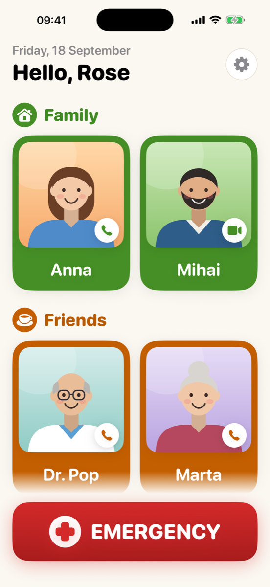
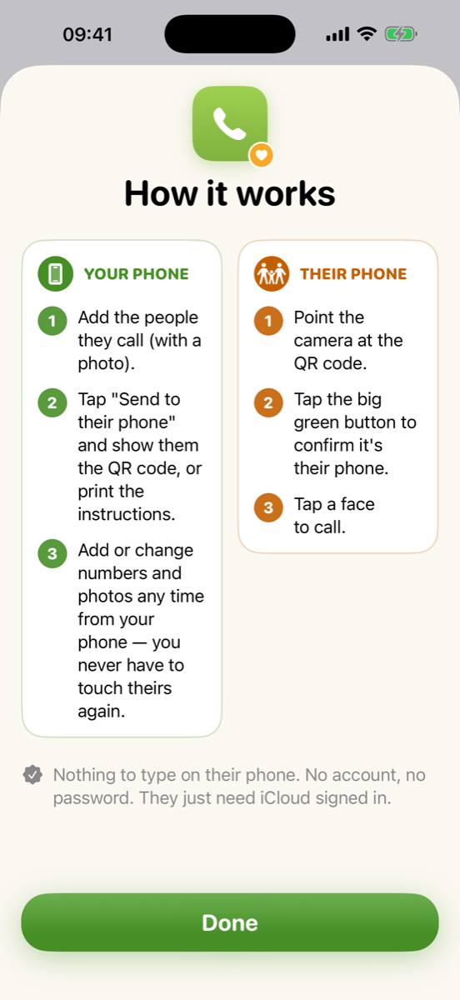

Big photo buttons
A face to tap instead of a name to find. Phone call, FaceTime video or FaceTime audio, per person.
For parents and grandparents
GrammyFone turns an iPhone into a calm, big-button phone: a large photo for everyone they call, and one red Emergency button. You set it up from your own phone, and keep it up to date from anywhere.
Free to download. GrammyFone Family is a one-time purchase, shared with your Family Sharing group.

No fiddling with settings on their phone during a visit. You pick the people and photos; GrammyFone sends it over.
No account, no password, nothing to remember. Their iPhone just needs to be signed in to iCloud.

Everything is large, high-contrast and one tap away, with a gentle confirmation so nobody calls by accident.
A face to tap instead of a name to find. Phone call, FaceTime video or FaceTime audio, per person.
One button calls the emergency number and alerts the family with where they are.
Put a loved one's photo on the Home Screen or Lock Screen and call with one tap.
Several family members can help manage the same phone, each from their own iPhone.
Follows the text size and dark mode settings, with extra large layouts for the largest sizes.
No accounts, no ads, no tracking. Contacts sync through your own iCloud, not our servers.
Try it free on one phone with up to four people. GrammyFone Family unlocks everything, once, and is shared with your Family Sharing group. No subscription.